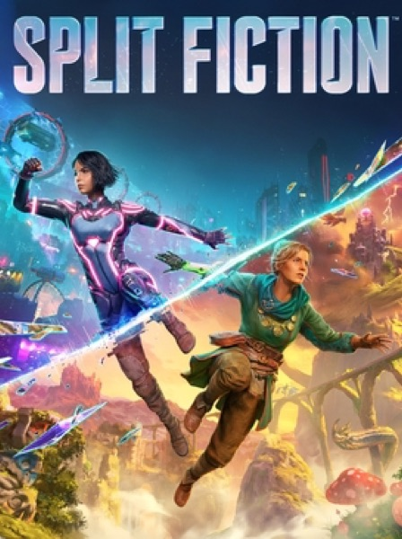

Platformer · 2025
Split Fiction
Two players, two genres per level, and still no solo mode.

Cover: Wikipedia: Split Fiction
Facts
- Released
- 2025-03-06
- Genre
- Co-op Platformer
- Category
- Platformer
- Platforms
- Nintendo, PC, PlayStation, Xbox
- Developers
- Hazelight Studios
- Publishers
- Electronic Arts
PC requirements
- Minimum
- [object Object]
- Recommended
- [object Object]